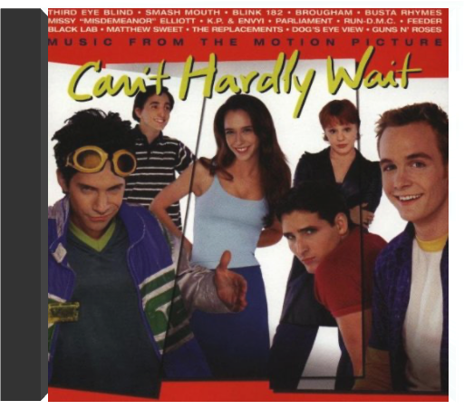
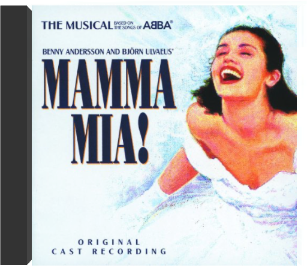

Can't Hardly Wait: Music From The Motion Picture  This is a soundtrack that runs like a fun mix tape from an eclectic friend. It's music to put the top down and hit the highways to, songs that bounce from soul, pop, funk, rap, and back. Smashmouth look to have another massive hit with their cover of Frankie Valli and the Four Seasons' "Can't Get Enough of You Baby." The song's fun beat and organ sounds suit the band (and summertime) perfectly. Fans of Third Eye Blind, Busta Rhymes, Missy Elliott, and K.P. & Envyi will want to check out the soundtrack's unreleased remixes. The Missy Elliott remix of "Hit Em Wit Da Hee" in particular is a solid slow jam. The CD is dotted with some classic tracks such as the title track by the Replacements, "Flashlight" from Parliament, "Paradise City" from Guns N' Roses, and the sure party starter "It's Tricky" from Run DMC. —Jim Young Mamma Mia! The Musical Based on the Songs of ABBA: Original Cast Recording All products are BRAND NEW and factory sealed. Fast shipping and 100% Satisfaction Guaranteed. |
 Made with Delicious Library
Made with Delicious LibrarySpringfield, State zipflap congrotus delicious library Doddridge, Edward